Baked daily
Fresh bread and pastries from our ovens every morning.
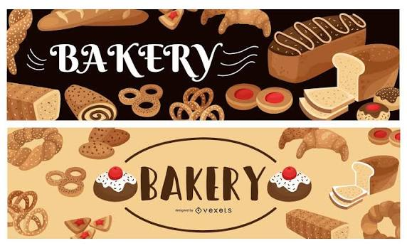
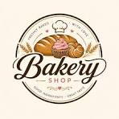
Fresh bread baked locally every morning
Welcome to Bjärreds Brödhus
We bake sourdough bread, pastries and cakes using carefully selected ingredients and traditional methods. Visit us in Bjärred and enjoy something fresh from the oven.
Fresh bread and pastries from our ovens every morning.
Carefully selected ingredients with focus on taste and quality.
A welcoming neighbourhood bakery in the heart of Bjärred.
Our story
Bjärreds Brödhus is a local bakery with a passion for traditional baking. We make our bread, pastries and cakes from carefully selected ingredients.
Our dough is prepared with time and care, and everything is baked fresh for our customers each morning.
From our bakery
Explore a small selection of our freshly baked bread, pastries and cakes.
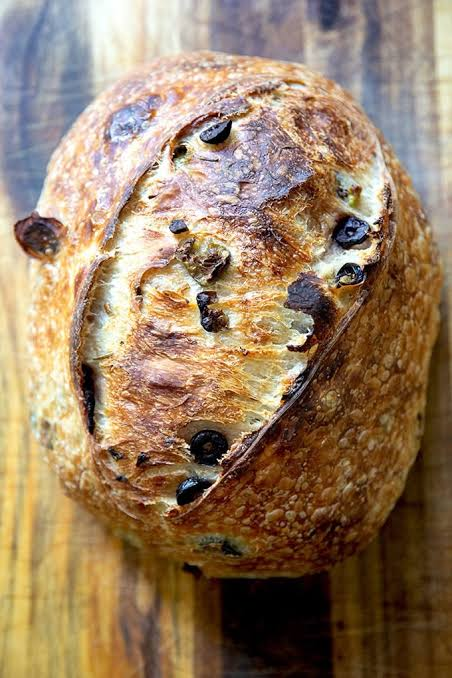
A rustic loaf with a crisp crust and a soft, flavourful centre.
55 SEK
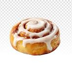
A soft bun filled with cinnamon, butter and a touch of cardamom.
32 SEK
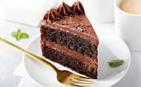
A rich chocolate cake with a smooth chocolate ganache.
48 SEK
Inside the bakery
Take a look at our bakery, our baking process and some of the products we make every day.
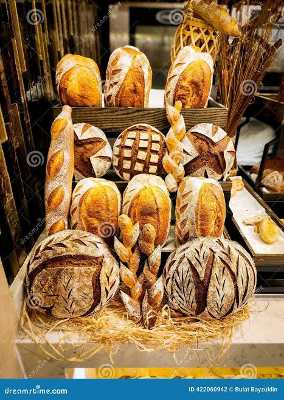
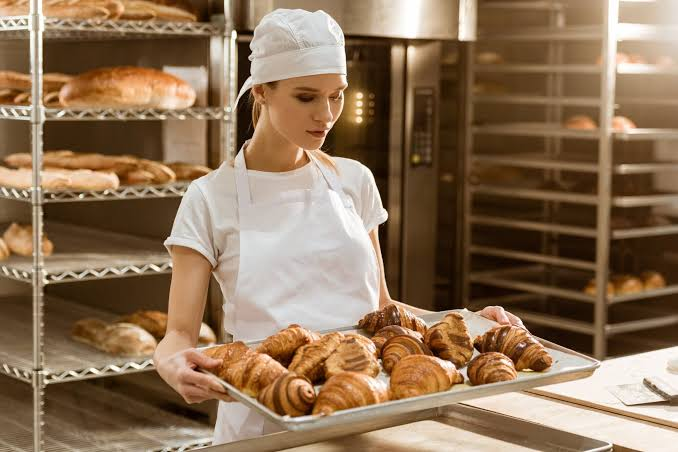
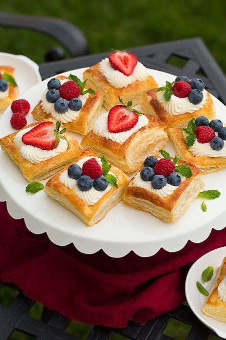
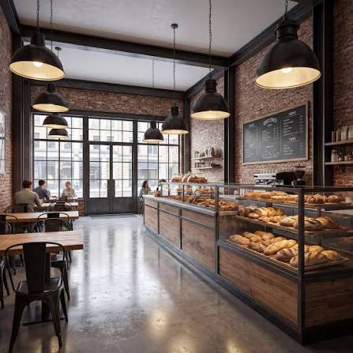
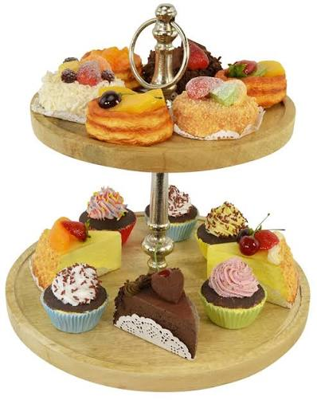
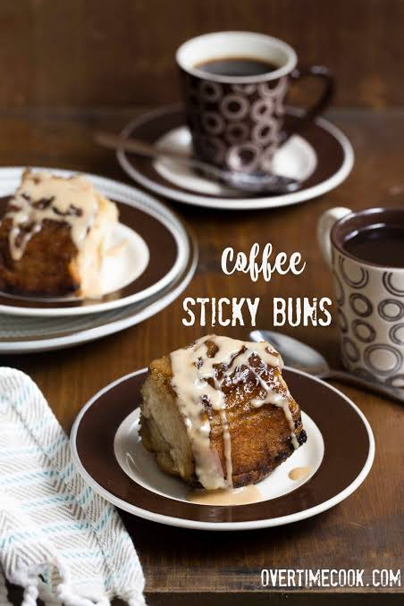
Visit us
Visit us in Bjärred for freshly baked bread, pastries and cakes, or contact us if you have any questions.
Address
Centrumvägen 12
237 31 Bjärred
Telephone
+46 46 123 45 67
Email
hello@bjarredsbrodhus.se